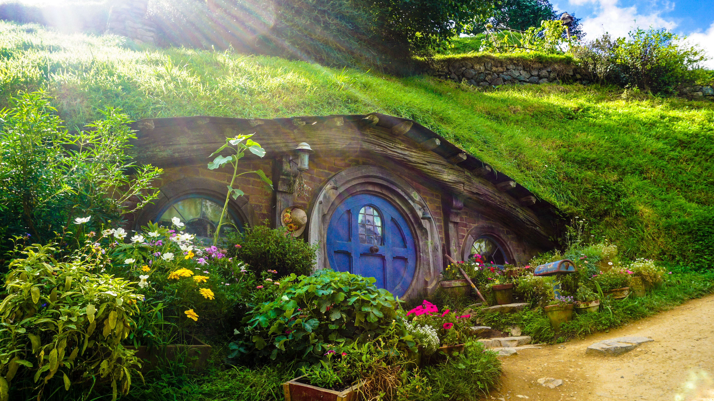

Growing Gorgeous Roses: A Guide to Planting and Caring for Your Rose Bushes
posted in 14 april 2023

In this gardening blog post, we'll explore the best practices for planting and caring for rose bushes. When planting
roses, it's important to select a spot with well-draining soil and plenty of sunlight. Dig a hole twice the size of the
root ball and mix in compost or other organic matter to improve soil quality. Once planted, water thoroughly and add a
layer of mulch to retain moisture and suppress weeds. To care for rose bushes, regular pruning and fertilizing are key.
Remove dead or diseased wood, and prune back one-third of the growth each year to encourage new growth and larger
blooms. Fertilize with a balanced fertilizer in the spring and summer, and water deeply during dry spells. With these
tips, you can enjoy beautiful, healthy rose bushes in your garden.
Read more
Gardening Like a Hobbit: Exploring the Love of Nature and Gardens in The Shire
posted in 10 april 2023

The Shire, the idyllic homeland of the Hobbits in J.R.R. Tolkien's Middle-earth, is a place of lush gardens and pastoral
beauty. The Hobbits have a deep love of nature and gardening, and this is reflected in the landscape of the Shire.
Hobbit gardens are typically small and carefully tended, with an emphasis on growing vegetables, fruits, and flowers for
both practical and aesthetic purposes. The Hobbits take great pride in their gardens, and competitions for the best
tomatoes or pumpkins are common. The Shire is also home to many parks and forests, where Hobbits can indulge their love
of walking and communing with nature. Indeed, the Hobbits' connection to the natural world is a central theme in
Tolkien's work, and it serves as a reminder of the importance of respecting and caring for our environment.
Read more